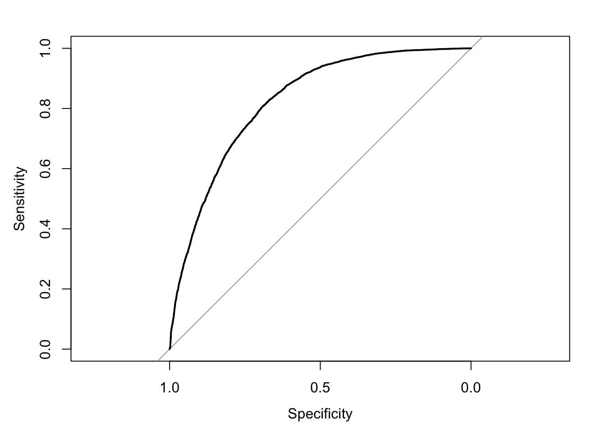

# Libraries needed
library(tidymodels)
library(pROC)
library(dplyr)
# Import the dataset
data <- read.csv("/Users/brigettemahoney/Desktop/diabetes_binary_5050split_health_indicators_BRFSS2015.csv")
# make the target variable (diabetes) binary
data$Diabetes_binary <- as.factor(data$Diabetes_binary)
# Split data into 80/20 train/split
set.seed(123)
splits <- initial_split(data, prop = 0.8, strata = Diabetes_binary)
train_data <- training(splits)
test_data <- testing(splits)
# Fit the logistic regression on ALL features
log_model <- logistic_reg() %>%
set_engine("glm") %>%
fit(Diabetes_binary ~ ., data = train_data)
# Predict and compute all probabilities
predictions <- predict(log_model, new_data = test_data)
probs <- predict(log_model, new_data = test_data, type = "prob")
# Compute the Accuracy
accuracy <- mean(predictions$.pred_class == test_data$Diabetes_binary)
print(paste("Accuracy:", round(accuracy, 3)))## [1] "Accuracy: 0.743"# Compute the AUC
roc_curve <- roc(test_data$Diabetes_binary, probs$.pred_1)## Setting levels: control = 0, case = 1## Setting direction: controls < casesprint(paste("AUC:", round(auc(roc_curve), 3)))## [1] "AUC: 0.824"# Print all of the significant coefficients
tidy(log_model) %>% filter(p.value < 0.05) %>% arrange(desc(abs(estimate)))## # A tibble: 17 × 5
## term estimate std.error statistic p.value
## <chr> <dbl> <dbl> <dbl> <dbl>
## 1 (Intercept) -6.93 0.139 -49.8 0
## 2 CholCheck 1.35 0.0905 15.0 1.51e- 50
## 3 HvyAlcoholConsump -0.739 0.0550 -13.4 3.65e- 41
## 4 HighBP 0.735 0.0221 33.2 4.64e-242
## 5 GenHlth 0.588 0.0128 45.9 0
## 6 HighChol 0.579 0.0211 27.4 1.44e-165
## 7 Sex 0.268 0.0214 12.5 4.91e- 36
## 8 HeartDiseaseorAttack 0.239 0.0317 7.54 4.66e- 14
## 9 Stroke 0.207 0.0462 4.48 7.50e- 6
## 10 Age 0.152 0.00437 34.8 9.59e-266
## 11 DiffWalk 0.118 0.0289 4.08 4.57e- 5
## 12 BMI 0.0763 0.00176 43.4 0
## 13 Veggies -0.0724 0.0260 -2.78 5.46e- 3
## 14 Income -0.0593 0.00581 -10.2 1.71e- 24
## 15 Education -0.0263 0.0114 -2.30 2.16e- 2
## 16 PhysHlth -0.00895 0.00133 -6.73 1.64e- 11
## 17 MentHlth -0.00412 0.00143 -2.88 4.03e- 3# ROC plot
plot(roc_curve)
You can also embed plots, for example:
# Run Lasso Regularization
lasso_model <- logistic_reg(penalty = 0.1, mixture = 1) %>%
set_engine("glmnet") %>%
fit(Diabetes_binary ~ ., data = train_data)
tidy(lasso_model) %>%
filter(estimate != 0) %>%
arrange(desc(abs(estimate)))## # A tibble: 6 × 3
## term estimate penalty
## <chr> <dbl> <dbl>
## 1 (Intercept) -1.44 0.1
## 2 HighBP 0.494 0.1
## 3 GenHlth 0.302 0.1
## 4 HighChol 0.0278 0.1
## 5 Age 0.00927 0.1
## 6 BMI 0.00705 0.1